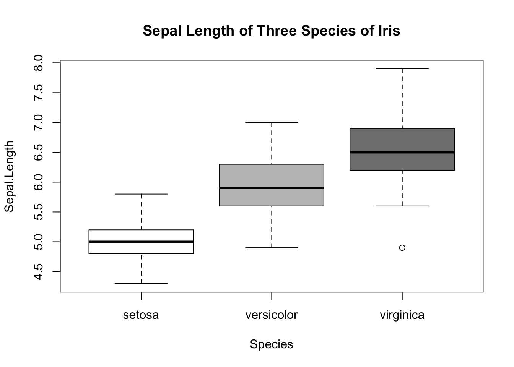
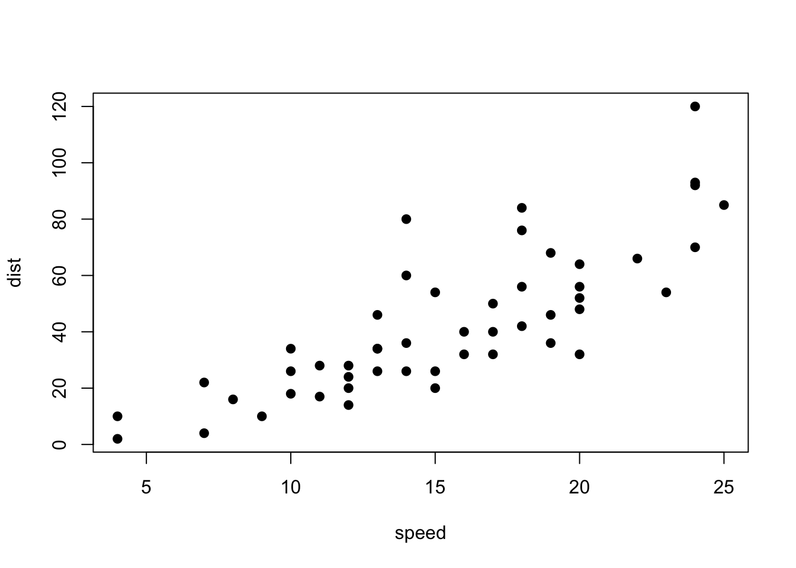

Let’s see if you can make a document that looks exactly like this using R Markdown. Try to copy this document verbatum. Set the output to “html_document”
iris datasetHere, I want you to insert a plot of three species of iris from the
iris dataset. I have suppressed the printing of the code
here. Some clues:
plot() function.
We can conduct a linear regression between the speed of a car and the
distance it takes for the car to stop. This data is available in a
dataset called cars that is pre-installed in R.
head(cars)## speed dist
## 1 4 2
## 2 4 10
## 3 7 4
## 4 7 22
## 5 8 16
## 6 9 10Let’s plot it:
plot(dist~speed, data=cars, pch=19)
We can conduct the linear regression with speed as the independent variable and distance as the dependent variable:
fit.cars=lm(dist~speed, data=cars)
summary(fit.cars)##
## Call:
## lm(formula = dist ~ speed, data = cars)
##
## Residuals:
## Min 1Q Median 3Q Max
## -29.069 -9.525 -2.272 9.215 43.201
##
## Coefficients:
## Estimate Std. Error t value Pr(>|t|)
## (Intercept) -17.5791 6.7584 -2.601 0.0123 *
## speed 3.9324 0.4155 9.464 1.49e-12 ***
## ---
## Signif. codes: 0 '***' 0.001 '**' 0.01 '*' 0.05 '.' 0.1 ' ' 1
##
## Residual standard error: 15.38 on 48 degrees of freedom
## Multiple R-squared: 0.6511, Adjusted R-squared: 0.6438
## F-statistic: 89.57 on 1 and 48 DF, p-value: 1.49e-12Let’s organize the results as a table:
| Slope | F (d.f.) | Adjusted R2 | P |
|---|---|---|---|
| 3.93 | 89.6 (1,48) | 0.64 | <0.001 |
There are other ways to make pretty tables, but we’ll just go with the simple markdown format presented in the Reference Guide.
You can download the .Rmd document by right-clicking here and selecting “Save Link as…”